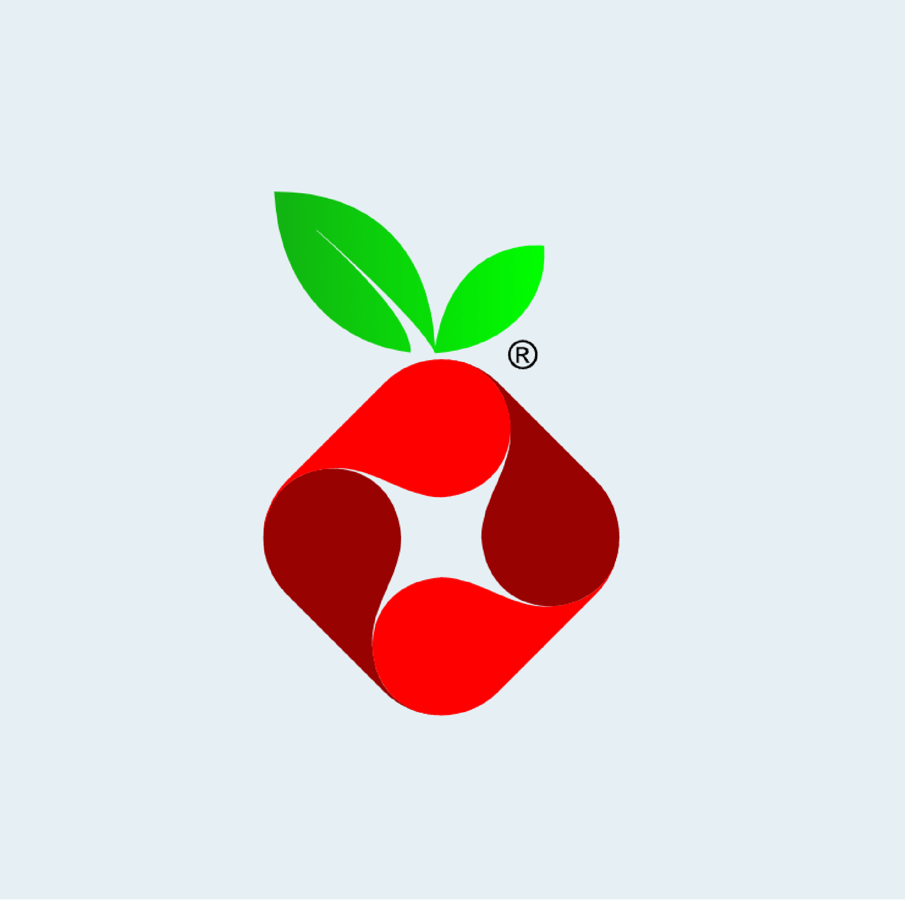

Pi-hole es un proyecto que consiste en la instalación de un bloqueador de anuncios a nivel de red utilizando un Raspberry Pi. con el objetivo de bloquear publicidad y rastreadores en toda la red domestica. Pi-hole actua como un servidor DNS local, filtrando solicitudes no deseadas y mejorando la velocidad y seguridad de la navegación. El proyecto explica la configuracion y las listas de bloqueo personalizadas, y la integracion con dispositivos de la red.